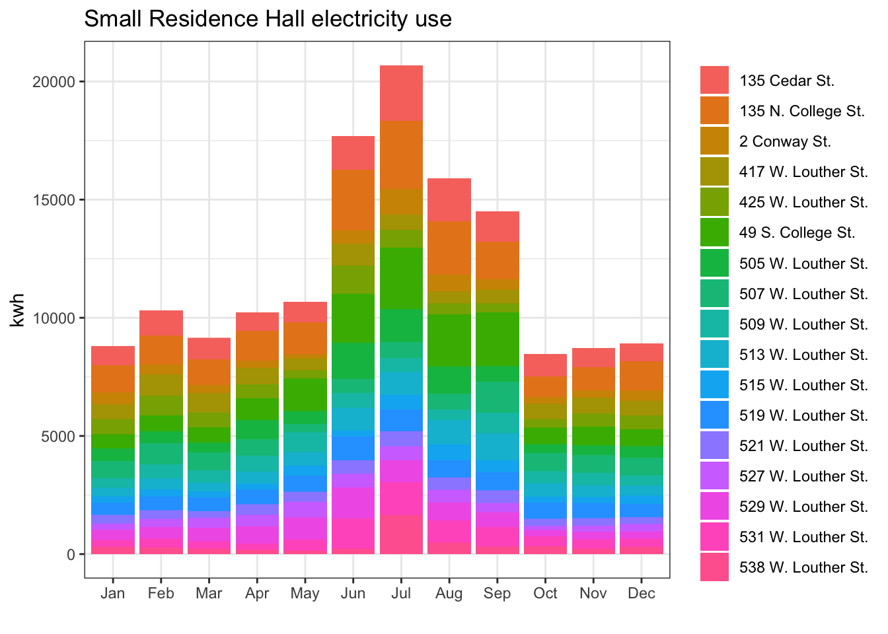
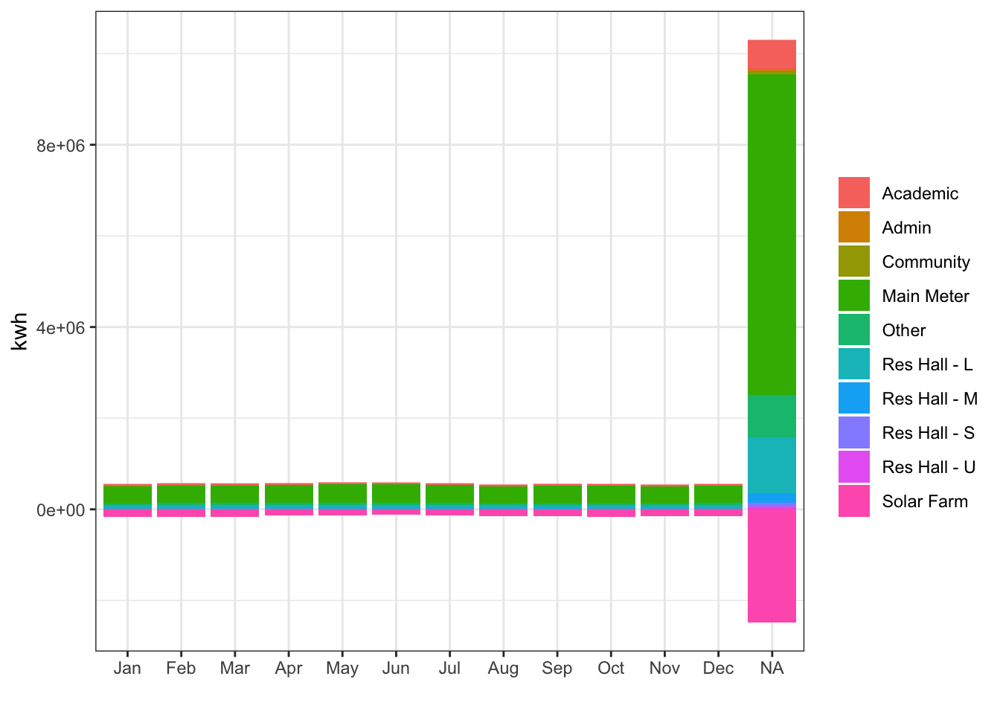
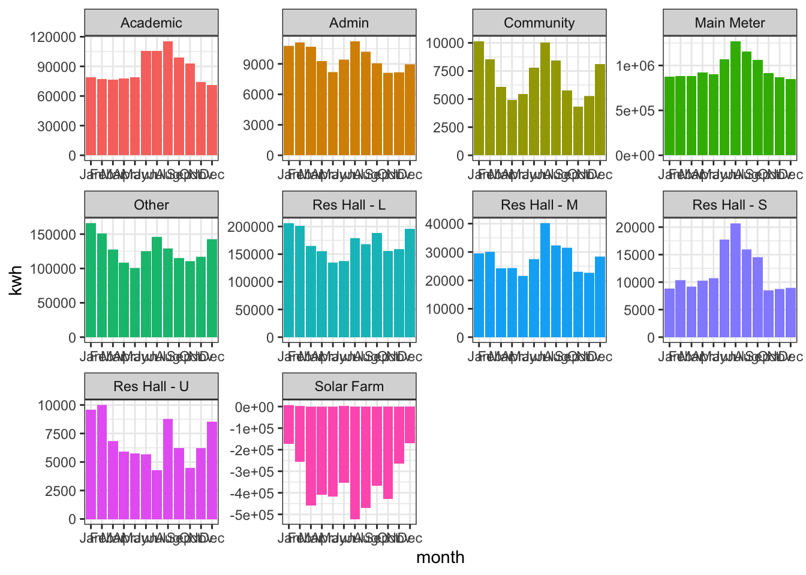
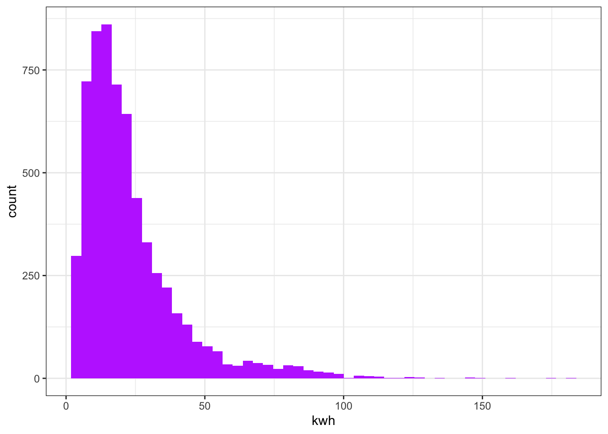
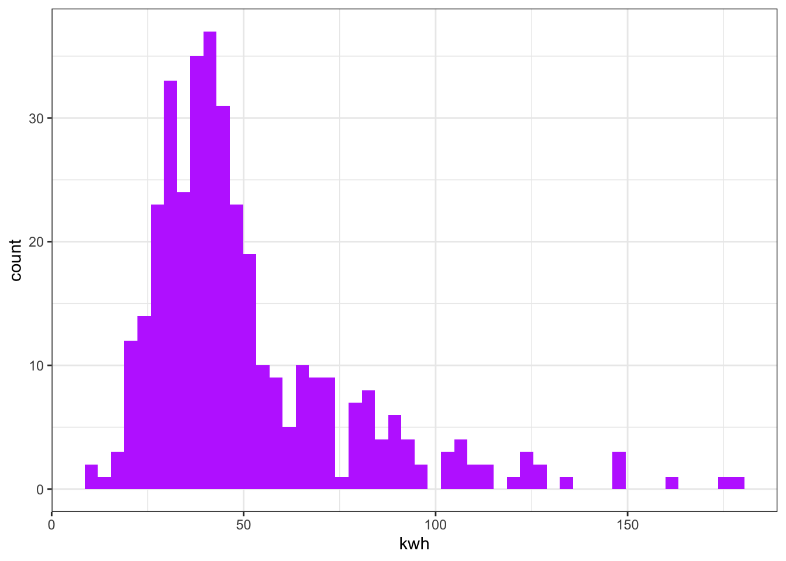
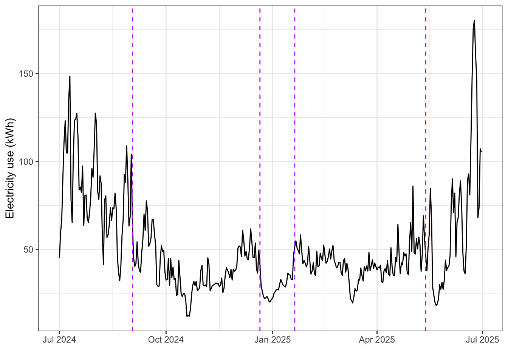
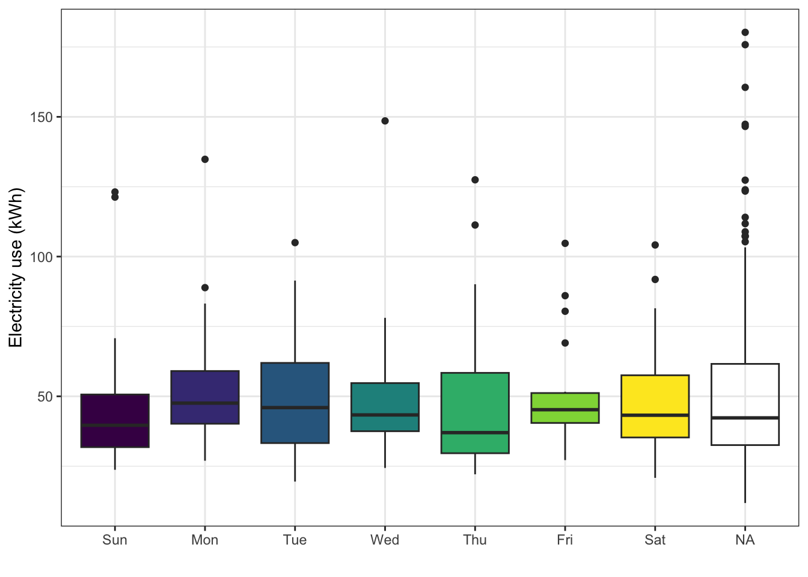
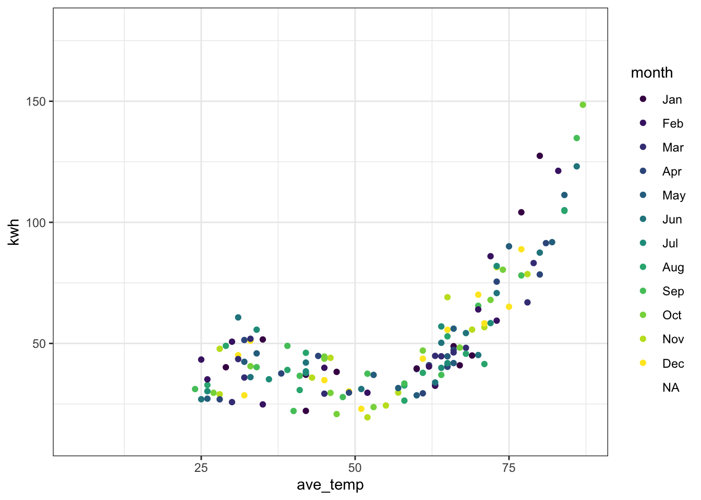

Building case study
Maggie Douglas
2026-02-05
Last updated: 2026-02-14
Checks: 6 1
Knit directory: dickinson_power/
This reproducible R Markdown analysis was created with workflowr (version 1.7.1). The Checks tab describes the reproducibility checks that were applied when the results were created. The Past versions tab lists the development history.
The R Markdown file has unstaged changes. To know which version of
the R Markdown file created these results, you’ll want to first commit
it to the Git repo. If you’re still working on the analysis, you can
ignore this warning. When you’re finished, you can run
wflow_publish to commit the R Markdown file and build the
HTML.
Great job! The global environment was empty. Objects defined in the global environment can affect the analysis in your R Markdown file in unknown ways. For reproduciblity it’s best to always run the code in an empty environment.
The command set.seed(20260107) was run prior to running
the code in the R Markdown file. Setting a seed ensures that any results
that rely on randomness, e.g. subsampling or permutations, are
reproducible.
Great job! Recording the operating system, R version, and package versions is critical for reproducibility.
Nice! There were no cached chunks for this analysis, so you can be confident that you successfully produced the results during this run.
Great job! Using relative paths to the files within your workflowr project makes it easier to run your code on other machines.
Great! You are using Git for version control. Tracking code development and connecting the code version to the results is critical for reproducibility.
The results in this page were generated with repository version f2835df. See the Past versions tab to see a history of the changes made to the R Markdown and HTML files.
Note that you need to be careful to ensure that all relevant files for
the analysis have been committed to Git prior to generating the results
(you can use wflow_publish or
wflow_git_commit). workflowr only checks the R Markdown
file, but you know if there are other scripts or data files that it
depends on. Below is the status of the Git repository when the results
were generated:
Ignored files:
Ignored: .DS_Store
Ignored: .Rhistory
Ignored: .Rproj.user/
Ignored: data/.DS_Store
Ignored: data/graph_data_life_exp.csv
Ignored: output/annual_kwh.csv
Ignored: output/building_check.csv
Ignored: output/building_check.xlsx
Ignored: output/daily_kwh.csv
Ignored: output/kwh_annual.csv
Ignored: output/kwh_daily.csv
Ignored: output/~$building_check.xlsx
Unstaged changes:
Modified: analysis/building_case_study.Rmd
Note that any generated files, e.g. HTML, png, CSS, etc., are not included in this status report because it is ok for generated content to have uncommitted changes.
These are the previous versions of the repository in which changes were
made to the R Markdown (analysis/building_case_study.Rmd)
and HTML (docs/building_case_study.html) files. If you’ve
configured a remote Git repository (see ?wflow_git_remote),
click on the hyperlinks in the table below to view the files as they
were in that past version.
| File | Version | Author | Date | Message |
|---|---|---|---|---|
| Rmd | f2835df | maggiedouglas | 2026-02-14 | adjust gitignore and improve data wrangling and main meter case study |
| Rmd | c2d2f6e | maggiedouglas | 2026-02-07 | project set up and preliminary analyses |
Purpose
This code is fleshing out the tasks for students in Problem Set 4 (data visualization).
Prepare data
Load
library(tidyverse)── Attaching core tidyverse packages ──────────────────────── tidyverse 2.0.0 ──
✔ dplyr 1.1.4 ✔ readr 2.1.5
✔ forcats 1.0.0 ✔ stringr 1.5.1
✔ ggplot2 3.5.1 ✔ tibble 3.2.1
✔ lubridate 1.9.3 ✔ tidyr 1.3.1
✔ purrr 1.0.2
── Conflicts ────────────────────────────────────────── tidyverse_conflicts() ──
✖ dplyr::filter() masks stats::filter()
✖ dplyr::lag() masks stats::lag()
ℹ Use the conflicted package (<http://conflicted.r-lib.org/>) to force all conflicts to become errorsannual <- read.csv("./output/annual_kwh.csv")
daily <- read.csv("./output/daily_kwh.csv")Wrangle
annual_RHS <- filter(annual, type == "Res Hall - S")
daily_date <- daily %>%
mutate(date = ymd(date),
month = month(date, label = TRUE),
day = wday(date, label = TRUE))Warning: There was 1 warning in `mutate()`.
ℹ In argument: `date = ymd(date)`.
Caused by warning:
! 16550 failed to parse.daily_RHS <- filter(daily_date, type == "Res Hall - S")
daily_N_Col <- daily_date %>%
filter(NAME == "135 N. College St.") Check
str(annual_RHS)'data.frame': 17 obs. of 5 variables:
$ type : chr "Res Hall - S" "Res Hall - S" "Res Hall - S" "Res Hall - S" ...
$ NAME : chr "135 Cedar St." "135 N. College St." "2 Conway St." "417 W. Louther St." ...
$ kwh_tot : int 13830 18531 5543 8115 7326 15611 8772 8965 7070 7910 ...
$ sqft : int 1900 1476 1729 1462 1318 1500 1492 1492 1532 1532 ...
$ kwh_sqft: num 7.28 12.55 3.21 5.55 5.56 ...str(daily_N_Col)'data.frame': 365 obs. of 15 variables:
$ NAME : chr "135 N. College St." "135 N. College St." "135 N. College St." "135 N. College St." ...
$ date : Date, format: "2001-01-25" "2001-10-25" ...
$ kwh : num 22.2 29.6 29 28.6 31.2 ...
$ ave_temp : int 42 27 28 32 33 25 24 22 32 33 ...
$ type : chr "Res Hall - S" "Res Hall - S" "Res Hall - S" "Res Hall - S" ...
$ main_meter : int 0 0 0 0 0 0 0 0 0 0 ...
$ date_constr: int 1910 1910 1910 1910 1910 1910 1910 1910 1910 1910 ...
$ date_acqd : int 1989 1989 1989 1989 1989 1989 1989 1989 1989 1989 ...
$ date_reno : int 2019 2019 2019 2019 2019 2019 2019 2019 2019 2019 ...
$ sqft : int 1476 1476 1476 1476 1476 1476 1476 1476 1476 1476 ...
$ kwh_sqft : num 0.015 0.0201 0.0196 0.0194 0.0212 ...
$ dollars : num 1.8 2.41 2.36 2.32 2.54 ...
$ co2_kg : num 6.64 8.87 8.68 8.56 9.35 ...
$ month : Ord.factor w/ 12 levels "Jan"<"Feb"<"Mar"<..: 1 10 11 12 NA NA NA NA NA NA ...
$ day : Ord.factor w/ 7 levels "Sun"<"Mon"<"Tue"<..: 5 5 1 3 NA NA NA NA NA NA ...Check distribution of square footage
res_halls <- filter(annual, type %in% c("Res Hall - S", "Res Hall - M", "Res Hall - L"))
ggplot(res_halls, aes(x = sqft)) +
geom_histogram(bins = 100, fill = "purple") +
theme_bw()
ggplot(res_halls, aes(x = sqft)) +
geom_density(fill = "purple") +
theme_bw() +
geom_vline(xintercept = c(2000, 10000), linetype = "dashed")
quantile(res_halls$sqft, c(0.33, 0.66)) 33% 66%
1532.00 5035.44 Building type summary
Total use
ggplot(daily_RHS, aes(x = month, y = kwh, fill = NAME)) +
geom_bar(position = "stack", stat = "identity") +
theme_bw() +
labs(x = "", fill = "", title = "Small Residence Hall electricity use")
Monthly pattern
ggplot(daily_date, aes(x = month, y = kwh, fill = type)) +
geom_bar(position = "stack", stat = "identity") +
theme_bw() +
labs(x = "", fill = "")
ggplot(daily_date, aes(x = month, y = kwh, fill = type)) +
geom_bar(position = "stack", stat = "identity") +
facet_wrap(. ~ type, scales = "free") +
theme_bw() +
theme(legend.position = "none")
Building case study
Distribution
ggplot(daily_RHS, aes(x = kwh)) +
geom_histogram(bins = 50, fill = "darkorchid1") +
theme_bw()
ggplot(daily_N_Col, aes(x = kwh)) +
geom_histogram(bins = 50, fill = "darkorchid1") +
theme_bw()
summary(daily_RHS$kwh) Min. 1st Qu. Median Mean 3rd Qu. Max.
1.93 11.31 18.29 23.21 28.74 180.24 summary(daily_N_Col$kwh) Min. 1st Qu. Median Mean 3rd Qu. Max.
11.83 32.96 42.69 50.77 58.53 180.24 Seasonal pattern
ggplot(daily_N_Col, aes(x = date, y = kwh)) +
theme_bw() +
geom_line() +
labs(x = "", y = "Electricity use (kWh)") +
geom_vline(xintercept = ymd("2024-09-02"), color = "darkorchid1", linetype = "dashed") +
geom_vline(xintercept = ymd("2024-12-21"), color = "darkorchid1", linetype = "dashed") +
geom_vline(xintercept = ymd("2025-01-20"), color = "darkorchid1", linetype = "dashed") +
geom_vline(xintercept = ymd("2025-05-13"), color = "darkorchid1", linetype = "dashed") Warning: Removed 221 rows containing missing values or values outside the scale range
(`geom_line()`).
Daily pattern
ggplot(daily_N_Col, aes(x = day, y = kwh, fill = day)) +
geom_boxplot() +
theme_bw() +
labs(x = "", y = "Electricity use (kWh)", fill = "") +
theme(legend.position = "none")
Relationship to temperature
ggplot(daily_N_Col, aes(x = ave_temp, y = kwh, col = month)) +
geom_point() +
theme_bw()Warning: Removed 221 rows containing missing values or values outside the scale range
(`geom_point()`).
sessionInfo()R version 4.3.2 (2023-10-31)
Platform: x86_64-apple-darwin20 (64-bit)
Running under: macOS Ventura 13.7.8
Matrix products: default
BLAS: /Library/Frameworks/R.framework/Versions/4.3-x86_64/Resources/lib/libRblas.0.dylib
LAPACK: /Library/Frameworks/R.framework/Versions/4.3-x86_64/Resources/lib/libRlapack.dylib; LAPACK version 3.11.0
locale:
[1] en_US.UTF-8/en_US.UTF-8/en_US.UTF-8/C/en_US.UTF-8/en_US.UTF-8
time zone: America/New_York
tzcode source: internal
attached base packages:
[1] stats graphics grDevices utils datasets methods base
other attached packages:
[1] lubridate_1.9.3 forcats_1.0.0 stringr_1.5.1 dplyr_1.1.4
[5] purrr_1.0.2 readr_2.1.5 tidyr_1.3.1 tibble_3.2.1
[9] ggplot2_3.5.1 tidyverse_2.0.0 workflowr_1.7.1
loaded via a namespace (and not attached):
[1] sass_0.4.8 utf8_1.2.4 generics_0.1.3 stringi_1.8.3
[5] hms_1.1.3 digest_0.6.37 magrittr_2.0.3 timechange_0.3.0
[9] evaluate_0.23 grid_4.3.2 fastmap_1.1.1 rprojroot_2.0.4
[13] jsonlite_1.8.8 processx_3.8.3 whisker_0.4.1 ps_1.7.5
[17] promises_1.2.1 httr_1.4.7 fansi_1.0.6 viridisLite_0.4.2
[21] scales_1.3.0 jquerylib_0.1.4 cli_3.6.2 rlang_1.1.3
[25] munsell_0.5.0 withr_3.0.0 cachem_1.0.8 yaml_2.3.8
[29] tools_4.3.2 tzdb_0.4.0 colorspace_2.1-0 httpuv_1.6.13
[33] vctrs_0.6.5 R6_2.5.1 lifecycle_1.0.4 git2r_0.33.0
[37] fs_1.6.3 pkgconfig_2.0.3 callr_3.7.3 pillar_1.9.0
[41] bslib_0.6.1 later_1.3.2 gtable_0.3.4 glue_1.7.0
[45] Rcpp_1.1.0 highr_0.10 xfun_0.41 tidyselect_1.2.0
[49] rstudioapi_0.16.0 knitr_1.45 farver_2.1.1 htmltools_0.5.7
[53] labeling_0.4.3 rmarkdown_2.25 compiler_4.3.2 getPass_0.2-4